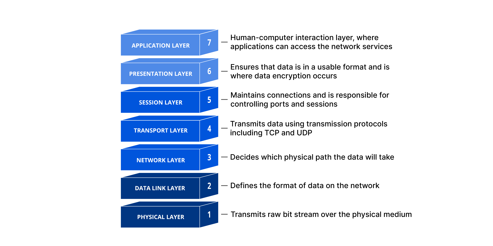
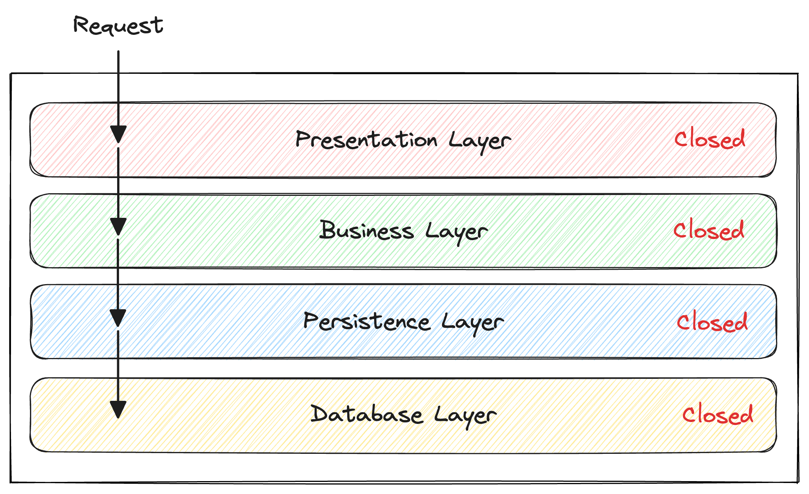
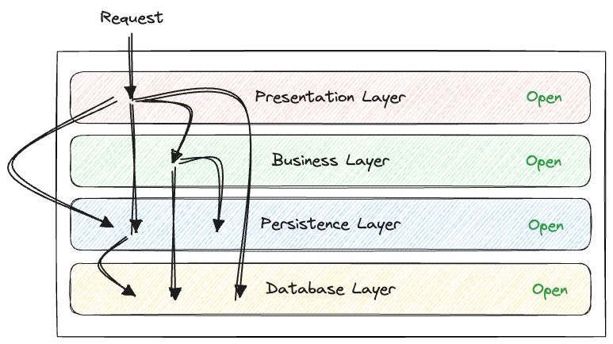
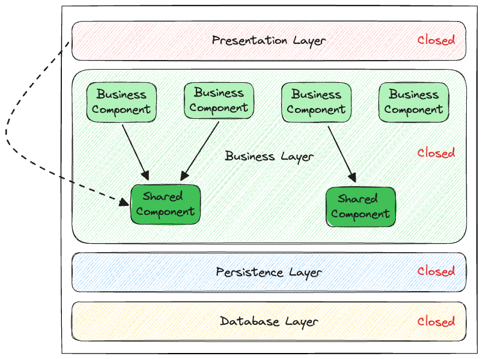
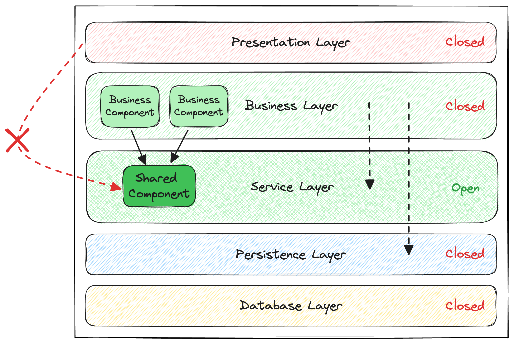
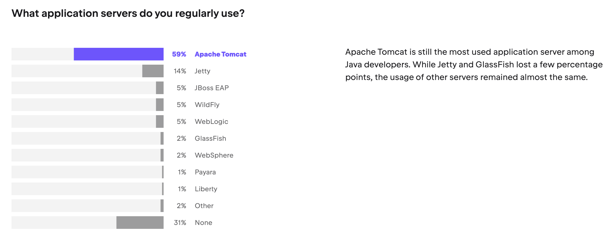

AMT
Multi-tier architecture and patterns
Bertil Chapuis, Dorian Gambin
## <i class="fas fa-tasks"></i> Overview of Today's Class - multi-tier architecture - Model-View-Controller - The Java Ecosystem
## <i class="fas fa-tasks"></i> Sources - [Fundamentals of Software Architecture](https://learning.oreilly.com/library/view/fundamentals-of-software/9781492043447/) - [Wikipedia](https://en.wikipedia.org/) - [OpenAI ChatGPT](https://chat.openai.com/) - [GitHub Copilot](https://github.com/features/copilot)
multi-tier architecture
## <i class="fas fa-sitemap"></i> Multi-tier architecture The **multi-tier architecture** (also called n-tier) is a common design approach for modern applications. - An application is divided into tiers, each with a specific responsibility. - The most widely used form is the three-tier architecture. - **Presentation**: user interface - **Business Logic**: core functionality - **Data**: storage and management
## Layered architecture The **layered architecture** (also called layer pattern), is a design approach used in software development to structure programs into distinct layers, each with a specific role and responsibility. - It promotes **separation of concerns** - It simplifies **maintainability** This pattern is also used for network development and a prime example is the OSI model:  <div style="font-size: 0.5em;text-align: center;"><a href="https://www.cloudflare.com/learning/ddos/glossary/open-systems-interconnection-model-osi/">Cloudflare OSI Model</a></div>
## Tiers vs Layers **Tiers** are physical divisions of an application across multiple machines. - Split an application across **multiple machines/servers**. - Focus on: **security**, **performance**, **scalability**, **fault tolerance**. **Layers** are logical divisions that separate different concerns or functionalities. - Split an application into **separate concerns or functions**. - Focus on: **organization**, **maintainability**, **separation of concerns**. </div>
## <i class="fas fa-sitemap"></i> Conway's law > Any organization that designs a system (defined broadly) will produce a design whose structure is a copy of the organization's communication structure. <div style="font-size: 0.4em;">Melvin E. Conway, <i>How Do Committees Invent?</i>, April 1968</div> Notes: http://www.melconway.com/Home/pdf/committees.pdf In a development team, it is common to find: - front-end developers - back-end developers - database administrators These roles map nicely to the three layers of the multi-tier architecture: - presentation - business - data layers
### Single tier layered architecture <img src="./images/layered-architecture-1.png" alt="Layered architecture" style="width: 60%;"/> Notes: This figure depicts a single-tier architecture. The four layers are grouped into a **single deployment unit**. - The **presentation layer** handles the **user interface** (e.g., web, mobile). - The **business layer** manages the **business logic** (e.g., authentication, authorization, validation, transactions). - The **persistence layer** manages **data access** (e.g., entities, repositories, domain objects). - The **database layer** handles **data storage** (e.g., tables, views, indexes). It is common to distinguish between the persistence layer and the database layer, since the database is rarely embedded in or managed directly by the persistence layer.
### Two-tier layered architecture <img src="./images/layered-architecture-2.png" alt="Layered architecture" style="width: 60%;"/> Notes: This figure introduces a **second tier** for the database. It is deployed in a physically separate unit. This is a common architecture for **multi-page web applications** developed with Django, Ruby on Rails, or Symfony.
### Three-tier layered architecture <img src="./images/layered-architecture-3.png" alt="Layered architecture" style="width: 60%;"/> Notes: This figure introduces a **third tier** for the presentation layer. It is deployed in a physically separate unit (e.g., a mobile device or a web browser). This is a common architecture for **single-page web applications** developed with Angular, React, or Vue.js. **Mobile applications** are also often developed with a similar architecture (e.g. Android, iOS, Flutter, etc.).
### Layer isolation  Notes: In a **layered architecture**, a layer can be **closed** or **open**. - A **closed layer** can only be accessed by the layer directly above it. - An **open layer** can be accessed by a set of higher layers selected by the architect. It may be tempting to **make all layers open**. For example, the presentation layer sometimes accesses the database directly. However, this is considered bad practice because it breaks the separation of concerns. With **tightly coupled layers**, changes become harder to isolate, and the application is more difficult to maintain. **Closed layers** are used to improve **separation of concerns** and reduce **coupling** between layers. The less coupled the layers are, the easier the system is to maintain and evolve. A change in one layer should ideally only affect the layer directly above it. As a result, the impact of a change is more predictable and easier to test. **Maintaining strict isolation between layers** is not always easy. Because it often requires extra boilerplate code, developers may be tempted to make layers open. Hence, keeping the number of layers small helps reduce unnecessary complexity.
### A recipe for spaghetti code  Notes: If all the layers are **open**, the presentation layer can potentially access all the other layers directly. This is a **bad practice** because it breaks the **separation of concerns**. **Tight coupling** between layers makes the application **harder to maintain** and **evolve**. This is a recipe for **spaghetti code** 🍝 turning the application into a **big ball of mud** 🧶.
### An increasing complexity  Notes: As the application grows, the **business layer** often becomes increasingly complex. In **monolithic applications**, this complexity leads to the creation of shared utility classes within the **business layer**. Because these classes are accessible, components in the **presentation layer** may start using them directly, which weakens the **separation of concerns**. And of course, our dear creative front-end engineers 👨🎨 aren’t always the most disciplined developers 🤷♂️.
### Reducing complexity with a new layer  Notes: To address this issue, we introduce a new **service layer** that contains the **shared components**. This **service layer** is **closed**, meaning it can only be accessed by the **business layer** directly above it. In contrast, the **persistence layer** is now **open** to both the **service layer** and the **business layer**. However, it should not be open to the **presentation layer**. Adding a new layer increases complexity, so this decision should be made carefully. It is usually the **architect’s** responsibility to introduce new layers as the application grows and becomes too **complex**. A good practice is to begin with a **small number of closed layers** and add more only as the application evolves. Keep in mind that enforcing these principles often depends on the **discipline of the team**.
### An outdated architecture? The **multi-tier architecture** is often associated with pejorative terms such as **monolith**, **big ball of mud** 🧶, or **spaghetti code** 🍝. The **microservices architecture** is often presented as the solution 💡 to all the problems of the multi-tier architecture. However, a **microservice** is often just a **smaller multi-tier application** and it is not a silver bullet to **architectural problems** 🏛️.
### Big ball of mud Each dot on the perimeter of the circle represents a class, and each line represents a connection between the classes. <div style="font-size: 0.5em;text-align: center;">Mark Richards, Neal Ford, <i>Fundamentals of Software Architecture</i></div>
<img src="./images/monolith-vs-microservices.jpeg" alt="Monolith vs microservices" style="width: 100%;"/> https://twitter.com/ddprrt/status/1425418538257428488
## <i class="fa-brands fa-amazon"></i> Case study: Amazon Video Streaming Amazon Video Streaming sounds like a good candidate for a microservice architecture. Read the following article on the Amazon Engineering Blog to learn more about the architecture of the Monitoring Service of Amazon Video Streaming: http://web.archive.org/web/20240717095641/https://www.primevideotech.com/video-streaming/scaling-up-the-prime-video-audio-video-monitoring-service-and-reducing-costs-by-90 Identify and discuss some key takeaways.
Model-View-Controller (MVC)
## <i class="fas fa-sitemap"></i> Definition **Model-View-Controller** (MVC) is a common pattern for the design of applications. It is **loosely** based on the idea of dividing an application into three interconnected parts: - The **model** is responsible for the **data** (e.g. entities, repositories, domain objects, etc.). - The **view** is responsible for the **user interface** (e.g. web page). - The **controller** is responsible for the **business logic** (e.g. routing, authentication, authorization, validation, transactions, etc.). Notes: Originally, the MVC pattern was introduced by Trygve Reenskaug in 1979 to design graphical user interfaces (GUIs) in Smalltalk. The popularization of the MVC pattern in the context of web applications is often attributed to the WebObjects framework developed by NeXT in the 1990s. First developed in Objective-C, WebObjects was later ported to Java. Many frameworks (e.g. Django, Ruby on Rails, Symfony, Spring, etc.) contributed to the popularization of this pattern.
## <i class="fas fa-sitemap"></i> The many faces of MVC Many variants of the MVC pattern exist (e.g. Model-View-Presenter, Model-View-Template, Model-View-ViewModel, etc.). In general, these variants share the same idea of separating the data, the user interface, and the business logic. However, the responsibilities of each part may vary slightly.
<img src="./images/mvc-2.png" alt="Model-View-Controller" style="width: 80%;"/> Notes: [Wikipedia](https://en.wikipedia.org/wiki/Model%E2%80%93view%E2%80%93controller) provides the following description of the interactions of the MVC pattern: *In addition to dividing the application into these components, the model–view–controller design defines the interactions between them.* - *The model is responsible for managing the data of the application. It receives user input from the controller.* - *The view renders presentation of the model in a particular format.* - *The controller responds to the user input and performs interactions on the data model objects. The controller receives the input, optionally validates it and then passes the input to the model.* *As with other software patterns, MVC expresses the "core of the solution" to a problem while allowing it to be adapted for each system.[38] Particular MVC designs can vary significantly from the traditional description here.*
<img src="./images/mvc-1.png" alt="Model-View-Controller" style="width: 80%;"/> Notes: In this variant described by [GeeksForGeeks](https://www.geeksforgeeks.org/benefit-of-using-mvc/), the controller handles the user requests, manipulates the model and sends the data to the view, which renders the data to the user.
<img src="./images/mvc-3.png" alt="Model-View-Controller" style="width: 80%;"/> Notes: In this simple variant, inspired by diagrams found in the documentation of web frameworks such as Django, Ruby on Rails, or Symfony, the controller handles the user request, manipulates the model and renders the view.
## <i class="fas fa-sitemap"></i> MVC as an organizational pattern MVC is often presented as an architectural pattern, but it is more of an organizational pattern, i.e., it helps to organize the code of an application. The **model**, the **view**, and the **controller** are often **co-located** or **grouped** using a naming convention. As a result, developers can easily find the code associated with a specific feature which improves the **maintainability** of the application.
## <i class="fas fa-sitemap"></i> MVC as way to enforce opinions A lot of web frameworks implementing the MVC pattern (e.g. Django, Ruby on Rails, Symfony, etc.) are said to be **opinionated**. This means that they impose a specific way to organize the code of an application. For instance, the following directory structure is common in web frameworks such as Django, Ruby on Rails, or Symfony. ``` . ├── controllers │ ├── user_controller.py │ └── ... ├── models │ ├── user_model.py │ └── ... └── views ├── user_view.py └── ... ``` When the framework automatically binds the user request to the corresponding component, it is said to be **convention over configuration**. Notes: Opinions can be pushed to the extreme. For instance, a convention may be used by a framework to automatically route a request to `/user/edit/1.html` to the `edit` method of the `UserController` class and render the result with the `edit` method of the `UserView` class. At first glance, it may seem like a good idea, however: - It can be a source of confusion for developers who are not familiar with the framework. - It can be difficult to customize the behavior of the framework when the convention does not fit the requirements of the application. - It can be difficult to test the application in isolation, as the framework is tightly coupled to the application (e.g. calling the `edit` method of the `UserController` class may require to mock the `UserView` class).
## <i class="fa-brands fa-github"></i> Case study: GitHub GitHub is a good example of a web application developed with Ruby on Rails, which is a framework implementing the MVC pattern. Read the following article on the GitHub Engineering Blog to learn more about the architecture of GitHub: https://github.blog/2023-04-06-building-github-with-ruby-and-rails/ Identify and discuss some key takeaways.
The Java Ecosystem
## <i class="fas fa-sitemap"></i> The Java Ecosystem The Java ecosystem is huge and not easy to navigate. The learning curve is steep and it is easy to get lost. Java was released in 1995 and Java EE in 1999. The ecosystem has been growing ever since. The number of frameworks, libraries, and tools is overwhelming. To navigate this ecosystem, it is important to understand the difference between specifications and their implementations (runtimes). But first...
## <i class="fas fa-sitemap"></i> Specifications <img src="./images/jakarta.png" alt="Jakarta EE" style="width: 25%; margin-left: 0;"/> **Jakarta EE** (formerly known as Java EE) is a set of specifications for the development of **multi-tier applications** in Java. <img src="./images/microprofile.png" alt="MicroProfile" style="width: 40%; margin-left: 0;"/> **MicroProfile** is a set of specifications overlapping with Jakarta EE, but with a focus on **microservices** and **cloud-native** applications. Notes: The timeline of the Java EE specifications is as follows: - J2EE 1.2 (1999) - J2EE 1.3 (2001) - J2EE 1.4 (2003) - Java EE 5 (2006) - Java EE 6 (2009) - Java EE 7 (2013) - Java EE 8 (2017) - Jakarta EE 8 (2019) - Jakarta EE 9 (2020) - Jakarta EE 10 (2021) - Jakarta EE 11 (2022) When Oracle decided to stop the development of Java EE, the community continued the development of the specifications under the name Jakarta EE at the Eclipse Foundation. As the Java name is a trademark of Oracle, the name of the specifications had to be changed as well as the name of the packages. Today, the specification efforts for Jakarta are alive and well. The MicroProfile initiative is very active and the Jakarta EE specifications are being updated.
<img src="./images/jakarta-ee-10.jpeg" alt="Jakarta EE" style="width: 100%;"/> Notes: The Jakarta EE 10 specifications cover a wide range of topics: - Dependency Injection - Persistence - Validation - Web Services - Configuration - Messaging - Security - Authentication - Authorization - Health Checks - Monitoring - Etc.
## <i class="fas fa-sitemap"></i> Implementations (runtimes) Implementations of the specifications are often referred to as **runtimes**. Runtimes implementing specifications can take many forms: - Application servers (e.g. GlassFish, OpenLiberty, WildFly, Paraya, TomEE, etc.) - Embedded servers () - Frameworks (e.g. Spring Boot, Quarkus, Helidon, Micronaut, etc.) - Libraries (e.g. Hibernate, EclipseLink, etc.) Some runtimes are **certified** by the Eclipse Foundation (GlassFish, OpenLiberty, WildFly, Paraya, TomEE). Other runtimes use the specification as a **baseline**, but are not **certified** (Spring Boot, Quarkus, Helidon, Micronaut, etc.). The promise of the specifications is that applications are **portable** between **certified** runtimes. In other words an application written for one runtime can be deployed on another runtime without modification.
<img src="./images/jetbrains-survey-1.png" alt="JetBrains survey" style="width: 60%;"/> Notes: Source: [Jetbrains Survey 2022](https://www.jetbrains.com/lp/devecosystem-2022/java/)
<img src="./images/jetbrains-survey-5.png" alt="JetBrains survey" style="width: 100%;"/> Notes: Source: [Jetbrains Survey 2022](https://www.jetbrains.com/lp/devecosystem-2022/java/)
<img src="./images/jetbrains-survey-4.png" alt="JetBrains survey" style="width: 100%;"/> Notes: Source: [Jetbrains Survey 2022](https://www.jetbrains.com/lp/devecosystem-2022/java/)
 Notes: Source: [Jetbrains Survey 2022](https://www.jetbrains.com/lp/devecosystem-2022/java/)
<img src="./images/jetbrains-survey-7.png" alt="JetBrains survey" style="width: 100%;"/> Notes: Source: [Jetbrains Survey 2022](https://www.jetbrains.com/lp/devecosystem-2022/java/)
## <i class="fas fa-sitemap"></i> Tooling **Tooling** is an important part of the Java ecosystem. - **IDEs** (e.g., Eclipse, IntelliJ, NetBeans, etc.) are used to write, debug, and refactor code. - **Build tools** (e.g., Maven, Gradle, etc.) are used to compile, test, and package applications. - **Testing frameworks** (e.g., JUnit, Mockito, etc.) are used to write and run tests. - **Continuous integration** tools (e.g., Jenkins, GitHub Actions, GitLab CI, etc.) are used to automate the build and testing process. - **Containerization tools** (e.g., Docker, Podman, etc.) are used to package applications in containers. - **Orchestration tools** (e.g., Kubernetes, OpenShift, etc.) are used to deploy and manage applications in containers.
<img src="./images/jetbrains-survey-3.png" alt="JetBrains survey" style="width: 100%;"/> Notes: Source: [Jetbrains Survey 2022](https://www.jetbrains.com/lp/devecosystem-2022/java/)
<img src="./images/jetbrains-survey-2.png" alt="JetBrains survey" style="width: 100%;"/> Notes: Source: [Jetbrains Survey 2022](https://www.jetbrains.com/lp/devecosystem-2022/java/)
## Perspectives Java is **pervasive** in the enterprise and will continue to be used for many years to come. It is widely used in the industry and there is a lot of demand for Java developers. Many local companies such as Swissquote, Swisscom, or UBS are extensively using Java. Internationally, companies such as Google, Amazon, Apple, or Meta are also using Java for their backend services. Notes: Source: [Jetbrains Survey 2022](https://www.jetbrains.com/lp/devecosystem-2022/java/)
<img src="./images/jetbrains-survey-8.png" alt="JetBrains survey" style="width: 100%;"/> Notes: Source: [Jetbrains Survey 2022](https://www.jetbrains.com/lp/devecosystem-2022/java/)
<img src="./images/jobs-jobup.png" alt="JetBrains survey" style="width: 100%;"/>
<img src="./images/jobs-google.png" alt="JetBrains survey" style="width: 100%;"/>
<img src="./images/jobs-apple.png" alt="JetBrains survey" style="width: 100%;"/>
<img src="./images/jobs-amazon.png" alt="JetBrains survey" style="width: 100%;"/>
<img src="./images/jobs-meta.png" alt="JetBrains survey" style="width: 100%;"/>